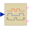

SVPWMSpaceVector Pulse Width Modulation |

|
Information
This information is part of the Modelica Standard Library maintained by the Modelica Association.
For a threephase system, 8 space vectors are available according to the following switching patterns:
- 0 [0,0,0] length 0
- 1 [1,0,0] 000°
- 2 [1,1,0] 060°
- 3 [0,1,0] 120°
- 4 [0,1,1] 180°
- 5 [0,0,1] 240°
- 6 [1,0,1] 300°
- 7 [1,1,1] length 0
Vector 1..6 form a hexagon, vector 0 and 7 are of length 0.
First, the space vector is limited, and the sector of the hexagon is determined where the input space vector u is located; then the angle of the space vector within this sector 0≤φ<60° is calculated.
The input space vector is averaged by u = ta*ua + tb*ub + t0*0, where ua is the space vector at the left border of the sector and ub is the space vector at the right border of the sector. If necessary, a zero length vector is applied additionally.
The relative time spans for averaging over one switching period are determined by the following equations:
- Real part: u*cos(φ) = ub*tb*cos(60°) + ua*ta*1
- Imag.part: u*sin(φ) = ub*tb*sin(60°)
- ta + tb + t0 = 1
To obtain the positive fire signal, the switching time spans are distributed symmetrically: t0/4 + ta/2 + tb/2 +t0/2 + tb/2 + ta/2 + t0/4
The switching pattern of the negative fire signal is just the inverse of the positive fire signal.
Parameters (4)
| samplePeriod |
Value: 1 / f Type: Time (s) Description: Sample period of component |
|---|---|
| startTime |
Value: 0 Type: Time (s) Description: First sample time instant |
| f |
Value: Type: Frequency (Hz) Description: Switching frequency |
| uMax |
Value: Type: Real Description: Maximum length of space vector = half diagonal of hexagon |
Outputs (2)
| sampleTrigger |
Type: Boolean Description: True, if sample time instant |
|---|---|
| firstTrigger |
Type: Boolean Description: Rising edge signals first sample instant |
Connectors (3)
| u |
Type: RealInput[2] Description: Reference space phasor |
|
|---|---|---|
| fire_p |
Type: BooleanOutput[m] Description: positive fire signal |
|
| fire_n |
Type: BooleanOutput[m] Description: negative fire signal |
Used in Components (1)
|
Modelica.Electrical.PowerConverters.DCAC.Control PulseWidthModulation |